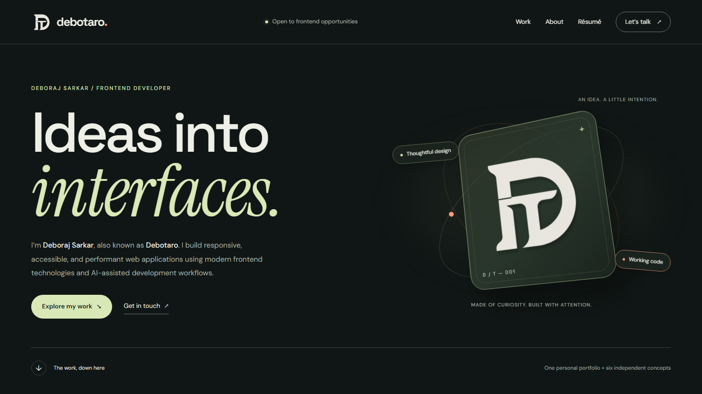

00 / The portfolio comes first
A first impression.
With substance.
This website is a project, too. A considered identity, a clear introduction and a collection of working interfaces — brought together to make the work easy to explore.
